Your own cloud for files, sharing, calendars and contacts — on a server you run yourself.
The iPhone app is in public beta on TestFlight until it reaches the App Store.
Cloudy has apps for Android, iPhone and the desktop (macOS, Windows and Linux) for a self-hosted Cloudy server. You sign in to a server that you, your company or someone you trust runs, and the apps talk only to that server. The developer never receives your files, photos, calendars or contacts. The apps have no ads, no analytics and no tracking.
The desktop app keeps a folder on your computer in sync with your Cloudy files. The server is free and open source and runs as a single Docker container. It also includes a web app and WebDAV, CalDAV and CardDAV support for other apps.
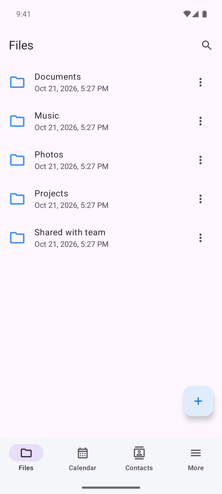
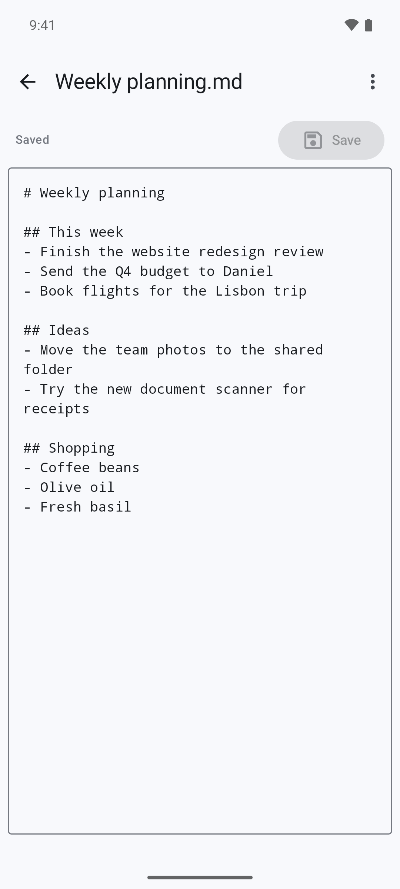
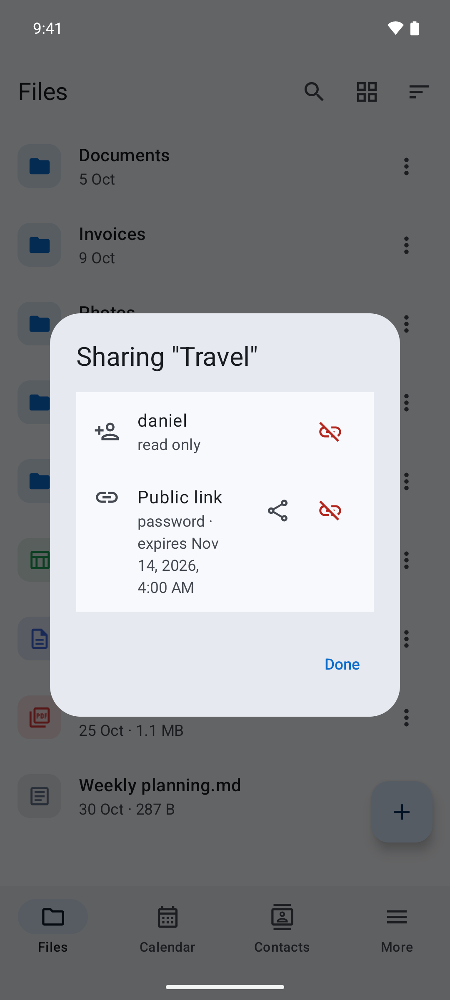
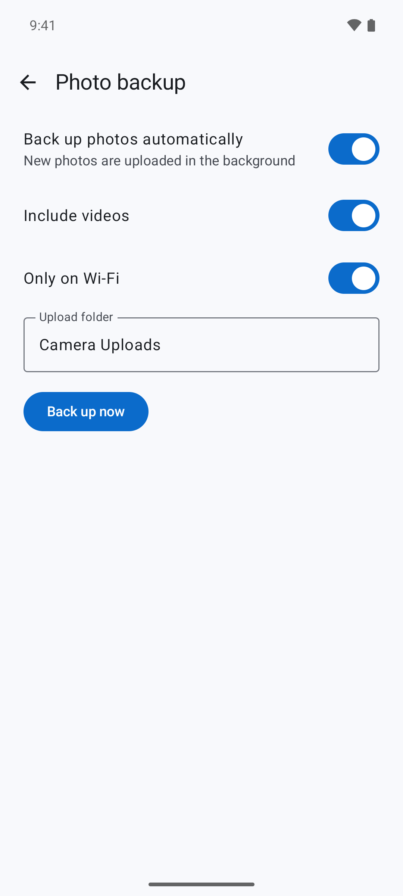
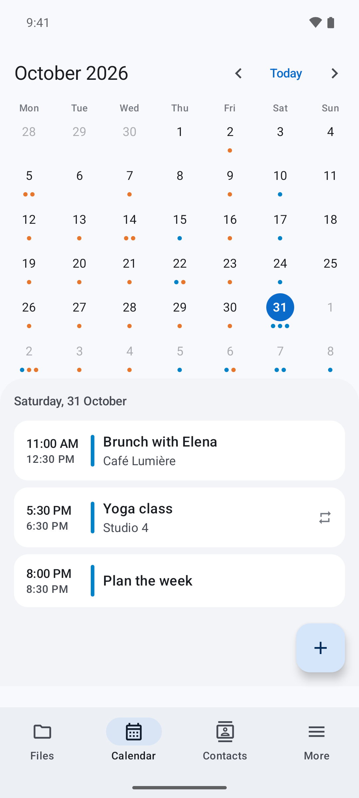
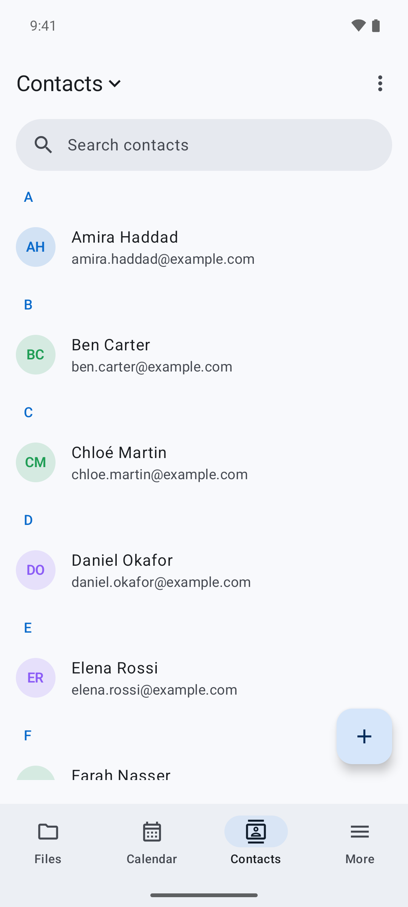
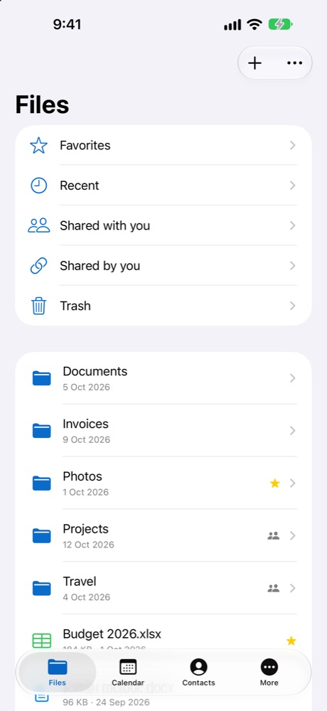
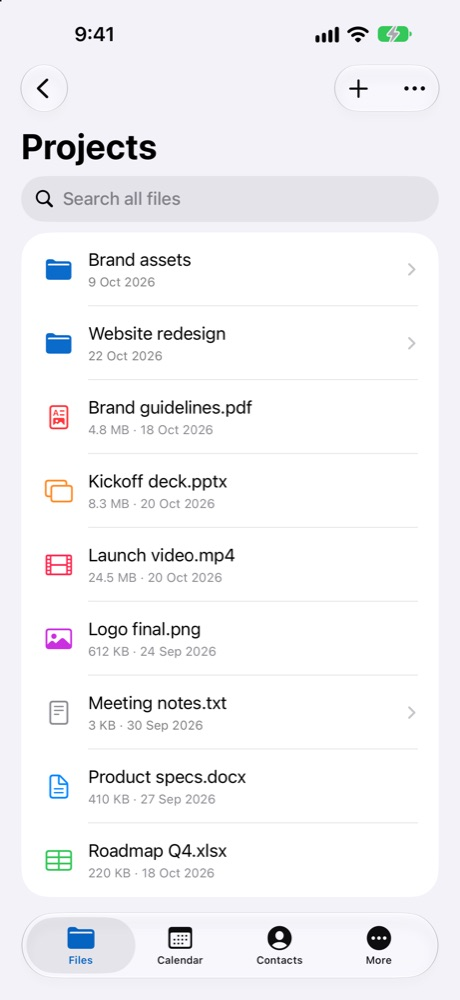
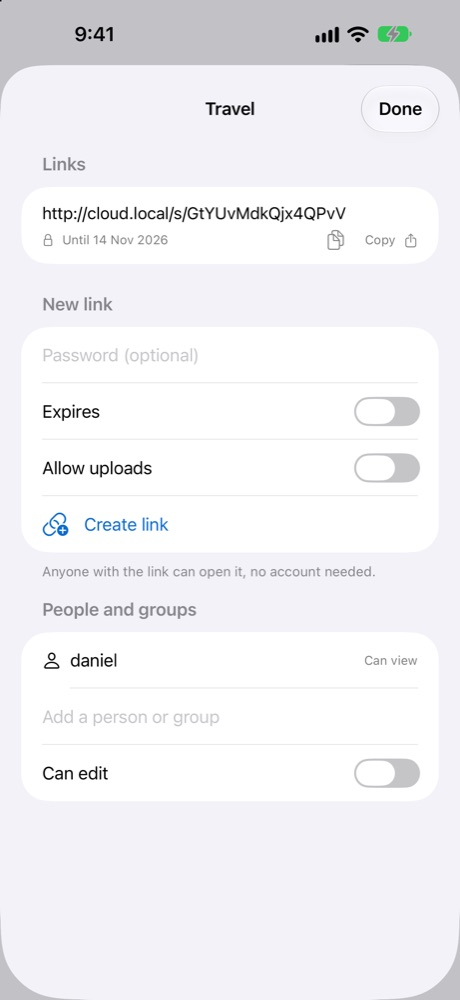
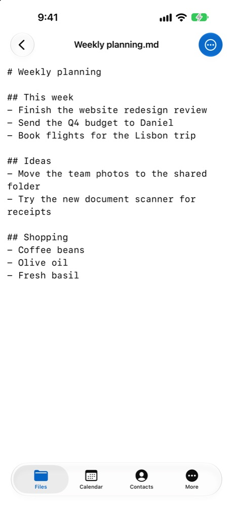
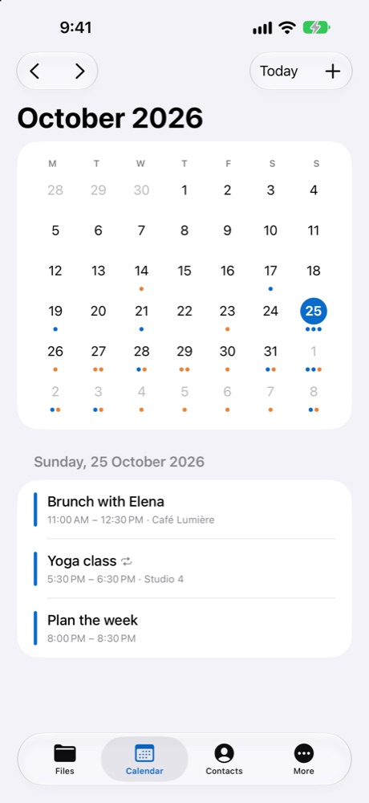
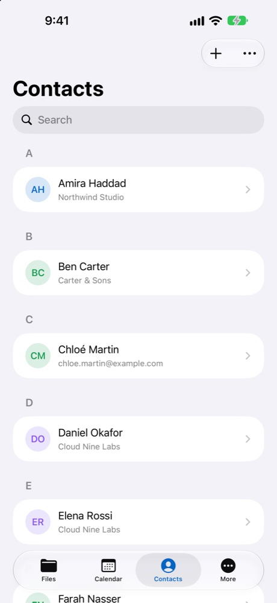
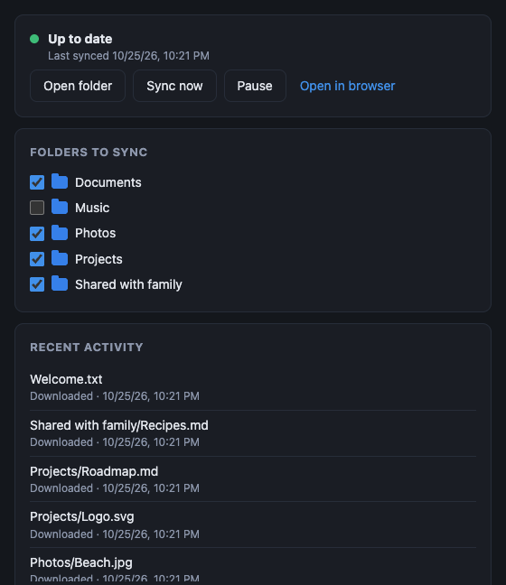
Browse, upload, download, rename, move and delete files and folders, in a list or a grid with thumbnails. Long-press to select several files and act on them at once. Favorites, recent files, search with type filters, and trash.
Images, video, audio, PDF and read-only Word, Excel and PowerPoint documents. Text files can be edited.
Share with users and groups, or create public links with a password and an expiry date.
Scan paper documents to a PDF and upload it straight into a folder.
Mark files as available offline and open them without a connection.
Upload new photos and videos to your server automatically, on Wi-Fi only if you like.
View and edit events and contacts. Import contacts from .vcf or .csv files and export them as .vcf.
A Cloudy folder on your computer that stays in sync both ways. Choose which folders to sync. Renames and moves aren't transferred again, edits in two places keep both copies, and deleted files go to the trash. It updates itself.
File lists refresh by themselves when something changes on another device.
Optional app lock with Face ID, fingerprint or screen lock, two-factor authentication, a list of signed-in devices you can revoke, and HTTPS connections to your server.
English, العربية, Deutsch, Français and Español, chosen in the app and shared with the web interface.
.dmg (Apple silicon arm64 or Intel x64) or .pkg for a Mac, the
.exe for Windows, the .AppImage or .deb for Linux. It appears in the menu bar or
system tray.